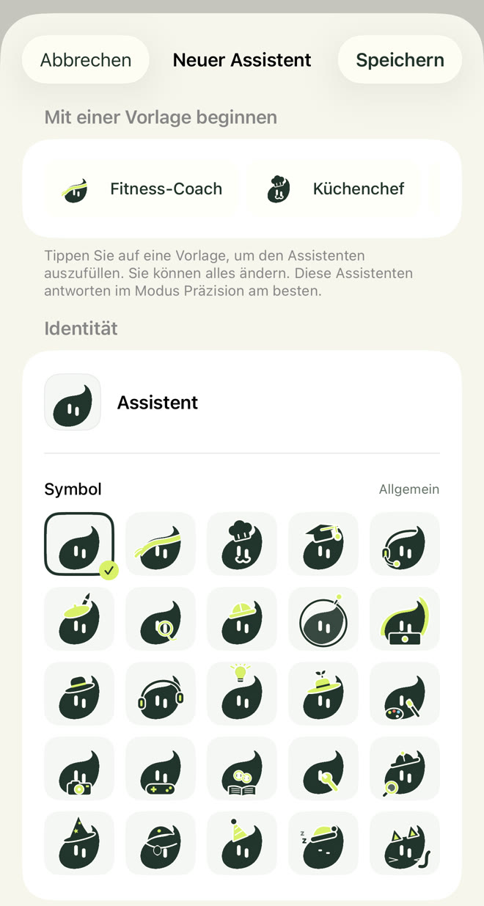
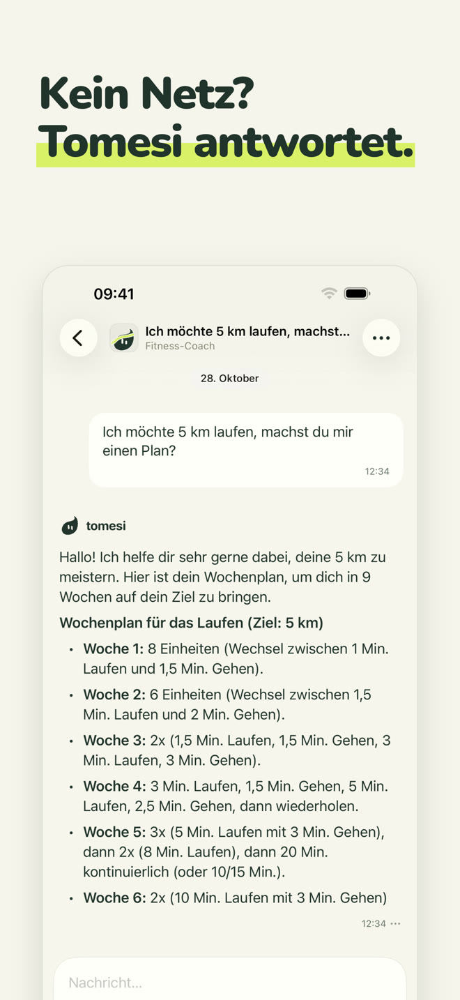
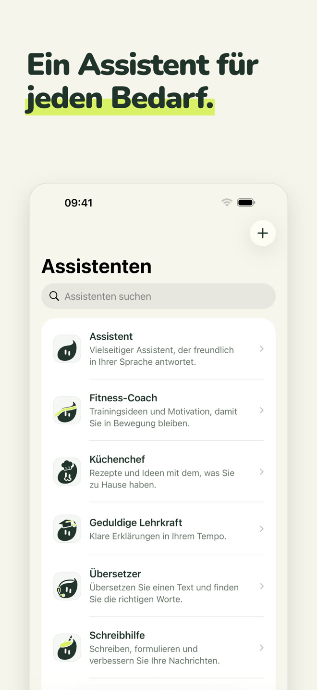
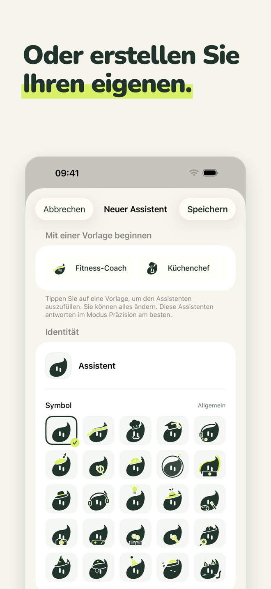
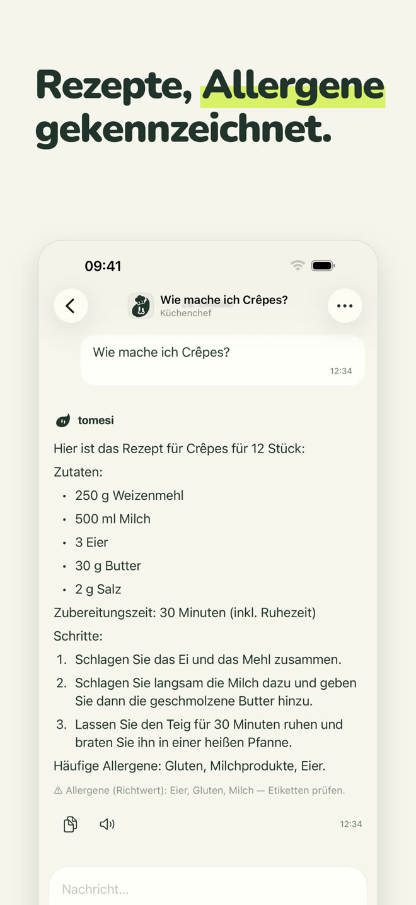
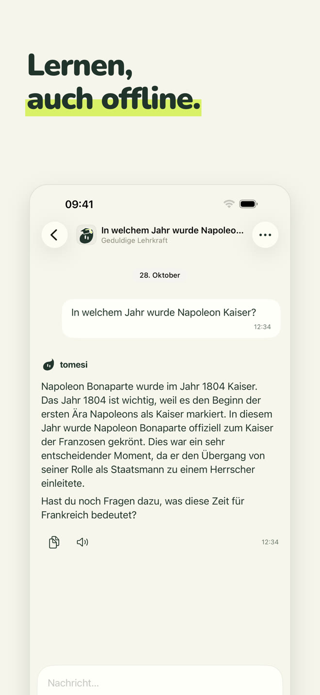
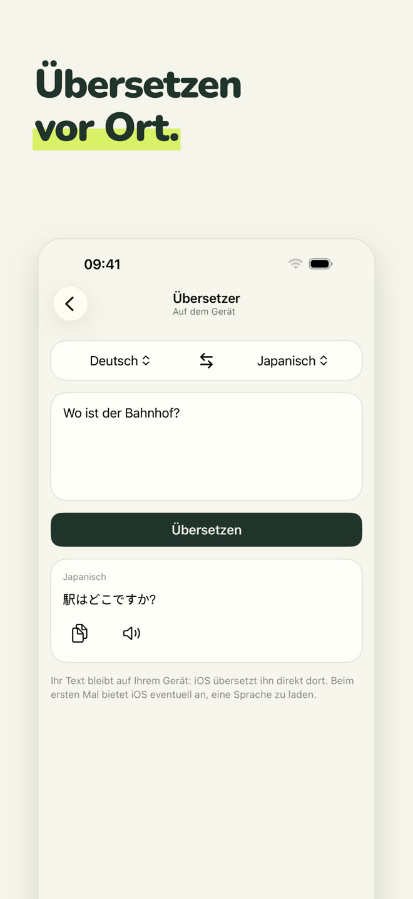
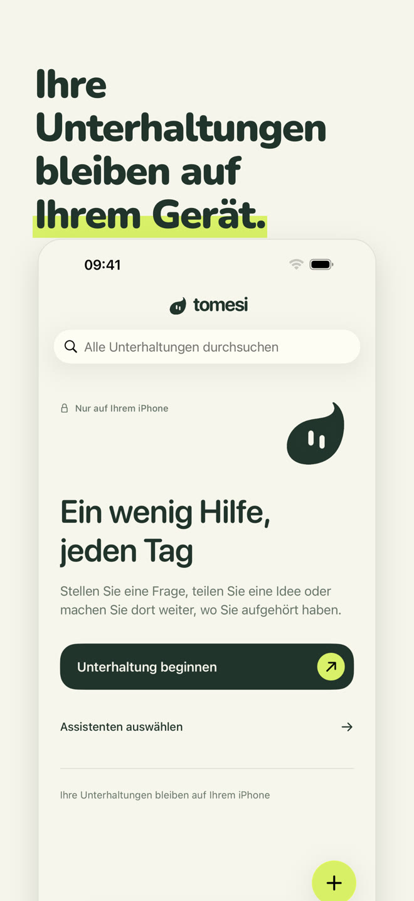

Ein 100 % lokaler KI-Assistent: Er läuft auf Ihrem iPhone – im Flugzeug, in den Bergen, im Ausland. Was Sie schreiben, verlässt nie Ihr Telefon.
Im App Store ladenEinmalkauf · ohne Konto · ohne Abo
Jeder Assistent hat seine Rolle und seine Art zu antworten. Wählen Sie den, der Ihnen hilft, oder sprechen Sie einfach mit dem Allround-Assistenten.
Allround: Er antwortet freundlich in Ihrer Sprache.
Trainings passend zu Ihrer Zeit und Ausrüstung, Pläne Woche für Woche.
Einfache Rezepte mit dem, was Sie dahaben, Allergene gekennzeichnet.
Erklärt Schritt für Schritt, in Ihrem Tempo: Mathe, Geschichte, Naturwissenschaften, Grammatik.
Übersetzen Sie Texte zwischen 13 Sprachen, direkt vor Ort.
E-Mails, Nachrichten, Briefe; und die Rechtschreibung, Fehler für Fehler korrigiert.
Geben Sie ihm einen Namen, eine Persönlichkeit und eines der 25 Tomesi-Symbole: ein Assistent ganz nach Ihrem Geschmack, der ebenfalls die Wissensblätter der App nutzt.

Ein kleines Modell kann nicht alles wissen. Tomesi bringt geprüfte Wissensblätter mit und gibt sie dem Assistenten beim Antworten.
Mengen, Schritte und Allergene, von der App unter der Antwort angezeigt.
14 Länder, dazu Blätter zu Naturwissenschaften, Geografie und Grammatik in 14 Sprachen.
Und 65 Leitfäden: mehrwöchige Pläne, Erholung, Ernährung, Sportarten.
Wie jede KI kann Tomesi sich irren: Prüfen Sie wichtige Informationen.







Die KI ist auf Ihrem iPhone installiert. Was Sie schreiben, wird nie über das Internet gesendet oder anderswo gespeichert.
Keine Anmeldung, keine E-Mail, keine Werbung, keine Datenerfassung.
Keine Server zu bezahlen, also kein Abo: Die App gehört Ihnen.
Der optionale Modus Präzision lädt ein leistungsfähigeres Modell (etwa 3 GB) für Antworten, die mehr Feingefühl brauchen.
Ja. Sobald die App und ihr Assistent installiert sind, braucht Tomesi kein Internet mehr: Die KI läuft vollständig auf Ihrem iPhone. Prüfen Sie es im Flugmodus.
Nirgendwohin. Sie bleiben auf Ihrem Telefon. Tomesi hat keinen Gesprächsserver, kein Benutzerkonto und keine Werbung. Siehe unsere Datenschutzerklärung.
ChatGPT lebt auf Servern: Sie brauchen eine Verbindung, und Ihre Unterhaltungen laufen darüber. Tomesi lebt auf Ihrem iPhone: weniger enzyklopädisch als ein Cloud-Riese, aber immer verfügbar, vollständig privat und ohne Abo.
Ein iPhone mit 8 GB Arbeitsspeicher (iPhone 15 Pro oder neuer) mit iOS 26 oder neuer. Planen Sie etwa 3 GB freien Speicher ein, plus 3 GB für den optionalen Modus Präzision.
Ja, wie jede KI. Die Rezepte, Geschichtsdaten und Wissensblätter der App sind geprüft und werden dem Assistenten mitgegeben, was Fehler stark verringert. Prüfen Sie wichtige Informationen trotzdem.
Tomesi ist in 13 Sprachen übersetzt (Deutsch, Englisch, Französisch, Spanisch, Italienisch, Niederländisch, Polnisch, Portugiesisch, Japanisch, Koreanisch, vereinfachtes Chinesisch, Russisch …), und der Assistent versteht und antwortet in noch mehr Sprachen.
Ja. MonIA heißt jetzt Tomesi. Wenn Sie sie schon gekauft haben, müssen Sie nichts erneut kaufen: Ein Update genügt, und Ihre Unterhaltungen bleiben auf Ihrem Telefon.